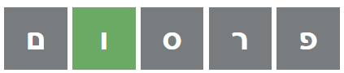

wordel
לכניסה למשחק
welcome to wordel
ברוכים הבאים לוורדל
.וורדל הוא משחק ניחוש מילים
.מטרת המשחק היא לנחש מילה בת 5 אותיות תוך 6 ניחושים
?איך משחקים וורדל
.עליכם לנחש את המילה הנכונה תוך 6 ניסיונות
."כל ניחוש חייב להיות מילה אמיתית באורך 5 אותיות. לבדיקה לחצו "בדוק
.לאחר כל ניחוש, צבע האותיות ישתנה כך שתוכלו לדעת כמה אתם קרובים לפתרון
:אם האות נמצאת במילה והיא במקום הנכון צבע האות ישתנה ל"ירוק". לדוגמא

:אם האות נמצאת במילה, אך לא נמצאת במקום הנכון צבע האות ישתנה ל"כתום". לדוגמא
:אם האות לא נמצאת במילה צבע האות ישתנה ל"אפור". לדוגמא
!בהצלחה